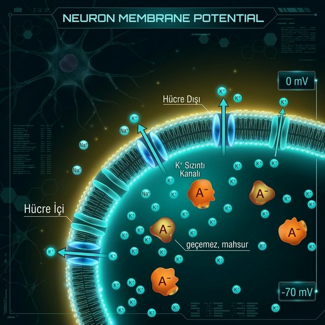

Dinlenme Membran Potansiyeli
Bir nöron uyarılmadığında bile zarının iki tarafı arasında bir elektrik gerilimi mevcuttur. Bu gerilime dinlenme membran potansiyeli (Vr) denir ve tipik değeri −65 ile −70 mV arasındadır. Negatif işaret, hücre içinin dışına göre daha elektrik-negatif olduğunu gösterir.
Neden İçerisi Negatif?
Bu negatifliğin kaynağı K⁺ iyonlarının hareketidir. K⁺ içeride dışarıya kıyasla daha yoğundur ve sızıntı kanallarından dışarı çıkmak ister. Her çıkan K⁺ bir pozitif yük götürür; büyük negatif proteinler (A⁻) ise zardan geçemediği için içeride mahsur kalır.
−70 mV: Denge Noktası
İçerideki negatiflik arttıkça K⁺'yı geri çekmeye başlar. Bir noktada "dışarı çık" kuvveti ile "geri gel" kuvveti dengelenir. −70 mV bu denge noktasının ölçümüdür; içerideki net yükün dışarıya göre ne kadar negatife kaydığını gösterir.
Denge Bozulursa: Aksiyon Potansiyeli
Bu denge uyarı olmadan bozulmaz. Ancak aksiyon potansiyeli sırasında Na⁺ kanalları açılır ve Na⁺ içeri hücum eder — içerisi hızla pozitife döner ve +30/+40 mV'a çıkar. Dinlenme halinde ise o eşik henüz aşılmamıştır.
